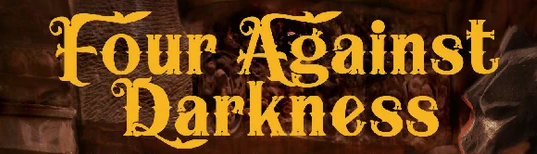

What is Four Against Darkness?
Four Against Darkness is a solo dungeon-delving pen-and-paper game where you control a party of adventurers exploring dangerous dungeons, fighting monsters, and collecting treasure. This web companion streamlines your gameplay by providing digital tools for mapping and character management.
Explore Your Adventure
Ready to Begin Your Quest?
Start mapping your dungeon or create your party of heroes.